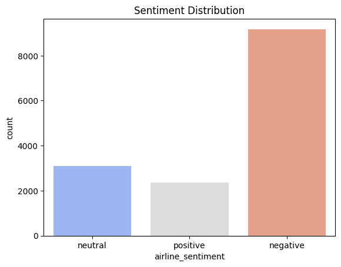
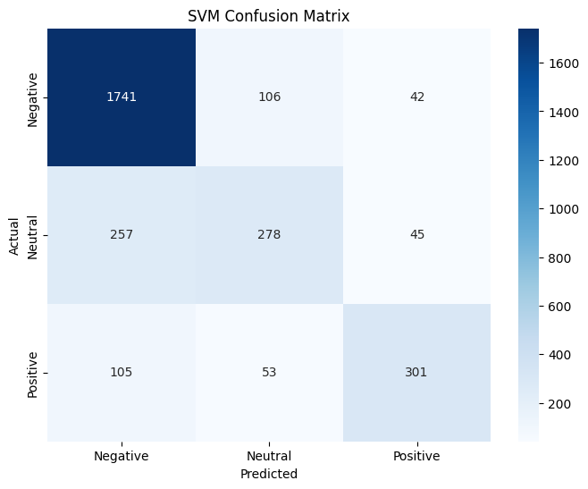
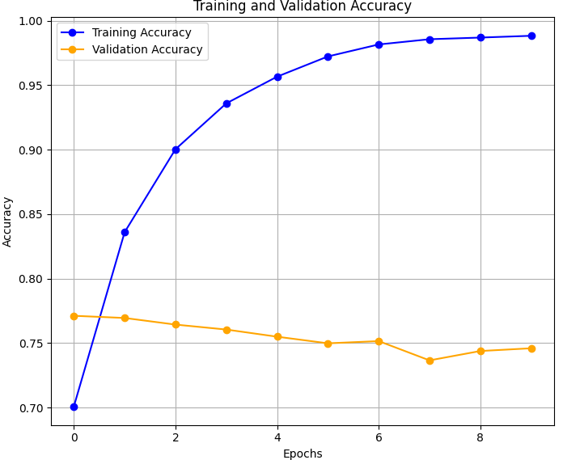
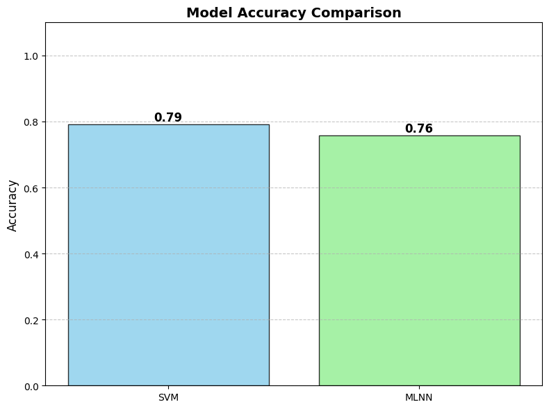

Exploring airline reviews through machine learning and data visualization
Student Information
Name:Muhammad Azhar Student ID: 23017233 Course: Machine Learning And Neural Networks Instructor:Dr Peter SciclunaRepo:https://github.com/azharasif/MLNN-Assignment.git
Introduction
In today’s digital age, people often share their opinions online about a wide range of topics, including services, products, and experiences, through platforms like social media. Twitter, in particular, has become a popular medium for expressing sentiments about various services, including airline companies. This large volume of user-generated content presents an opportunity to apply sentiment analysis to understand customer feelings towards airline services.
Sentiment analysis (SA) involves using machine learning techniques to categorize opinions as positive, negative, or neutral based on the text. In this context, the research focuses on analyzing the sentiments expressed by customers on Twitter regarding their experiences with airline services in the United States. By processing this data, we can gain valuable insights into customer satisfaction and dissatisfaction, which can be used by airlines to improve their services.
In this study, a novel deep learning approach using deep neural networks (DNN) is employed to classify the sentiments in tweets. The model is trained using a large dataset of tweets, and the accuracy of sentiment predictions is assessed using key metrics such as precision, recall, and F1-score. The results show that deep neural networks outperform traditional methods like logistic regression in terms of classification accuracy, making DNNs a more effective tool for sentiment analysis in this domain.
This tutorial will walk you through the sentiment analysis process using machine learning techniques, specifically focusing on how DNNs can be applied to Twitter data from U.S. airline companies. The analysis aims to reveal common positive and negative themes in customer feedback, which can guide airlines in enhancing their services and addressing customer concerns.
Data Description
In this study, sentiment analysis is performed on a Twitter US Airline Sentiment
. We utilized the "twitter-airline-sentiment" dataset,
which was retrieved from the Kaggle platform. The opinions of passengers are represented in the
dataset via the use of Twitter messages. In all, 14874 tweets
signify 6 airlines in the US, for a total of 14874 records.
record is subdivided into three categories: positive and
negative and neutral
PROPOSED FLOWCHART
As mentioned earlier, our goal is to do SA for Twitter data.
By using various kinds of machine learning classifiers, we
will build a neural network classifier. once it gets trained
then we have followed different steps to sentiment analysis
as mentioned below diagram:
1. Sentiment Distribution
The bar chart below illustrates the distribution of sentiments in the dataset.
It shows how many reviews fall under each category: negative, neutral, and positive. This is essential to understand
the overall sentiment trends and identify areas needing improvement.

8. Top 10 Words in Negative and Positive Tweets
Understanding the most frequently mentioned words in feedback helps pinpoint key areas of customer sentiment.
By analyzing the top 10 words in negative and positive tweets, we can identify recurring themes and improve services accordingly.
For example, frequently mentioned negative words may highlight common issues, while positive words may reveal aspects of service
that customers value most.
Top 10 Words in Negative Feedback
The bar chart below displays the most frequent words in negative tweets. These words, such as "delay" and "cancelled,"
indicate the primary issues customers face. Addressing these problems can significantly enhance customer satisfaction.
Top 10 Words in Positive Feedback
The bar chart below displays the most frequent words in positive tweets. These words, such as "great" and "helpful,"
highlight the strengths of the airline services that customers appreciate. Promoting these aspects can enhance the brand image
and attract more customers.
3. Data Preprocessing
Before training machine learning models, the text data is preprocessed to improve its quality and usability.
Steps include converting text to lowercase, removing unnecessary words (stopwords), and converting words into numerical vectors using TF-IDF.
This ensures the data is clean and ready for analysis.
4. SVM Confusion Matrix
A confusion matrix evaluates the performance of the Support Vector Machine (SVM) model.
It shows the number of correct and incorrect predictions for each sentiment category, helping to identify strengths and weaknesses in the model's predictions.

5. MLNN Training Metrics
The Multi-Layer Neural Network (MLNN) model was trained using the preprocessed data.
Below are the training and validation accuracy and loss metrics, plotted over multiple epochs.
These metrics indicate how well the model learned from the data and whether it overfit or underfit during training.

The accuracy plot shows a consistent improvement in both training and validation accuracy over time.
The loss plot indicates how the error decreases with each epoch, showing model learning progress.
6. Model Comparison
The bar chart below compares the performance of the SVM and MLNN models based on their accuracy scores.
The MLNN model slightly outperforms SVM, indicating its ability to capture complex patterns in the data.

7. Conclusion and Recommendations
This research highlights an efficient approach for sentiment analysis of US airline tweets, focusing on performance comparison between MLNN and SVM models. Pre-processing and feature representation proved crucial in enhancing classification outcomes. The results show that the MLNN model achieved an accuracy of 76%, while the SVM model outperformed it with an accuracy of 79%. This demonstrates the effectiveness of SVM for this dataset and underscores the importance of model selection in sentiment analysis tasks.
References
Wan, Y. and Gao, Q. (2016). An Ensemble Sentiment Classification System of Twitter Data for Airline Services Analysis. Proceedings of the 15th IEEE International Conference on Data Mining Workshop.
DOI: 10.1109/ICDMW.2015.7
Yimga, J. (2021). The Airline On-Time Performance Impacts of the COVID-19 Pandemic. Transportation Research Interdisciplinary Perspectives.
DOI: 10.1016/j.trip.2021.100386
Zhang, G. P. (2000). Neural Networks for Classification: A Survey. IEEE Transactions on Systems, Man, and Cybernetics Part C: Applications and Reviews.
DOI: 10.1109/5326.897072
Zhang, L., Wang, S., and Liu, B. (2018). Deep Learning for Sentiment Analysis: A Survey. Wiley Interdisciplinary Reviews: Data Mining and Knowledge Discovery.
DOI: 10.1002/widm.1253
Kaggle Dataset: Twitter Airline Sentiment Data.Kaggle Link